As a professional nickel alloy supplier, we are committed to popularizing the knowledge of the metallurgical industry to practitioners all over the world. We hope to do our best to promote the development of the industry.
In this article, we have sorted out the commonly used concepts in the metallurgical industry that we can think of. It can help you as a quick reference when learning about the industry.
We know that many terms are not so easy to understand. Therefore, we try our best to give the most simple and understandable explanation for each concept. After you have a basic understanding, you can refer to our recommended articles to learn some industry knowledge in more detail.
At the beginning of the article, we would like to introduce our company first. We are a supplier in China and focus on supplying Nickel Alloy / Superalloy materials to customers all over the world. If you visit our Blog page, you will be amazed by our efforts to popularize industry knowledge. If you have any purchasing needs, you can refer to our product page. You can also contact us via the email below:
Pure metal is a single substance of metal. The performance of pure metals is often relatively simple. Common pure metals are iron, nickel, copper, etc.
Alloy
Alloys are more complex metals that are composed of multiple metals. It often combines the properties of different metals.
Steel is a type of alloy. It generally refers to iron alloys containing carbon.
Carbon Steel
Carbon steel refers to steel with a carbon content of less than 2.11%. It is characterized by high hardness, but poor corrosion resistance. Generally speaking, the higher the carbon content in carbon steel, the harder the carbon steel will be. Carbon steel is often used as a construction material.
Stainless Steel
Stainless steel is steel with chromium added to carbon steel. It tends to be less hard than carbon steel, but it has good corrosion resistance. Some stainless steels also have nickel and molybdenum added to further improve performance. Stainless steel can be used in construction, food, medical and other industries.
Superalloy
Superalloy is a general term for a series of high temperature resistant alloys. According to different matrix, superalloys are divided into iron-based alloys, nickel-based alloys and cobalt-based alloys. The same is that they all have a certain amount of nickel and chromium. Superalloys are also generally better in corrosion resistance than stainless steels. It is commonly used in the aerospace, chemical and nuclear power industries.
Nickel-based alloys are the most mainstream superalloys. Its main component is nickel. The minor components are chromium, molybdenum and iron. Nickel-based alloys have good high temperature resistance and corrosion resistance. The price is often dozens of times that of stainless steel.
The main component of cobalt-based alloys is cobalt. Minor components are nickel and chromium. Its high temperature resistance and corrosion resistance are often better than nickel-based alloys, but the price will be more expensive.
Monel is a nickel-copperalloy. It is formed by adding copper elements on the basis of nickel. The characteristic of Monel alloy is that it has better corrosion resistance than stainless steel at room temperature. Its typical application is marine projects. Monel's performance at high temperatures is average, so it is not a superalloy.
Inconel is a nickel-chromiumalloy. It is formed by adding chromium to nickel. It is the most commonly used nickel-based superalloy. It is characterized by excellent high temperature resistance and excellent oxidation resistance.
Incoloy is a nickel-chromium-ironalloy. It reduces the nickel content and increases the iron content on the basis of Inconel. Therefore, its performance is not as good as Inconel, but the price is lower.
Hastelloy is a nickel-chromium-molybdenumalloy. Nickel brings high temperature resistance to the alloy. Chromium and molybdenum bring oxidation and reduction resistance to the alloy. Compared with Inconel, Hastelloy has better overall corrosion resistance.
Solid solution means dissolution in a solid substance. This phenomenon mainly exists in various alloys. Just like salt can be dissolved into water, the various metal elements in the alloy can also be dissolved into the matrix. The role of solid solution is to stabilize the properties of the alloy. It contributes to the high temperature properties of the alloy.
Solid solution strengthened alloy refers to an alloy whose properties are stabilized by Solid Solution. Such alloys can only be increased in strength by cold working. Therefore, the strength of solid solution strengthened alloys is limited. In addition, the strength of the solid solution strengthened alloy has a great relationship with the chemical composition itself.
Precipitation is the opposite phenomenon to solid solution. Just as salt crystals precipitate out when brine is evaporated, metallic elements also precipitate out of alloy solid solution during aging treatment. The purpose of precipitation is to greatly increase the strength of the alloy. It should be noted that not all alloys can be precipitated to increase strength.
Precipitation strengthened alloys refer to alloys that can be strengthened by Precipitation. Its strength is much higher than that of solid solution strengthened alloys because of the presence of one or two strengthening crystal phases in the former. The key elements to achieve precipitation strengthening are aluminum, titanium, niobium and tantalum.
Dispersion strengthened alloy refers to the alloy formed by dispersing compounds (generally oxides) inside the metal. These alloys are characterized by very good high temperature strength. However, the corrosion resistance of these alloys is often lower than that of ordinary superalloys.
Low expansion alloys are a special class of alloys. Their coefficient of thermal expansion is very low. There is no significant change in volume during the temperature increase.
Alloys are made by fusing multiple metals. Different elements have different effects on alloys. Different alloy grades have different chemical compositions. Some of these ingredients are beneficial to the alloy, while others are detrimental. The following is the role of some of the chemical compositions in the alloy.
Nickel is the 28th metal element. It can play a role in stabilizing the alloy structure in the alloy. It is the main source of the alloy's high temperature resistance.
Molybdenum is the 42nd metal element. It not only plays an anti-reduction role in the alloy, but also plays an obvious role in solid solution strengthening.
Copper is the 29th metallic element. It plays a good anti-oxidation role in alloys. However, its antioxidant properties tend to fail at high temperatures.
Tantalum is the 73rd metallic element. It often coexists with niobium and plays a role of precipitation strengthening. Tantalum can also play a good role in solid solution strengthening. In addition, it also contributes to the hot corrosion resistance of the alloy.
Tungsten is the 74th metallic element. Its solid solution strengthening effect is obvious. In addition, tungsten can also improve the pitting resistance of the alloy.
Carbon is the number 6 non-metallic element. It can improve the purity of the alloy during the smelting process. In the composition of the alloy, carbon can play a role in increasing the strength.
Manganese is the 25th metallic element. It has certain beneficial effects in alloys. However, it is seen more as a harmful element. It reduces the durability of the alloy.
Phosphorus is the 15th non-metallic element. A certain amount of phosphorus in the alloy can increase the creep strength. But in more cases, phosphorus will reduce the tensile properties and lead to the appearance of cracks.
Boron is the No. 5 non-metallic element. It improves the strength and castability of the alloy. However, excess boron has an adverse effect on durability properties.
In alloys, purity is a measure of the alloy's control over the amount of harmful elements. The less the number of harmful elements in the alloy, the higher the purity of the alloy.
In pure metals, purity measures the amount of impurities. The fewer impurities, the higher the purity of the metal.
Mechanical Properties
Mechanical properties refer to a series of characteristics that a material exhibits when subjected to external stress. It includes strength, plasticity, hardness and many other indicators. Mechanical properties are important indicators for materials to be referenced in practical applications.
Strength refers to the ability of a material to resist deformation or fracture when subjected to external stress. It determines the ability of a material to work stably in a high stress environment.
Tensile Strength
Tensile strength is a type of tensile property. It is the ability of a material to resist fracture when subjected to tension. The units are MPa, psi, ksi. It is the most important mechanical property in practical application.
Yield Strength
Yield strength is a type of tensile property. It is the ability of a material to resist deformation when subjected to tension. The units are MPa, psi, ksi. Since materials tend to deform first and then break, the yield strength of the same material is often lower than the tensile strength.
Plasticity
Plasticity refers to the ability of a material to resist fracture when deformed. Therefore, the more a material deforms at fracture, the more plastic it is. Materials with good plasticity can better resist impact.
Toughness
Toughness refers to the ability of a material to resist bending. The less likely a material is bent to break, the better toughness it has. In general, the better plasticity a material has, the better its toughness.
Ductility
Ductility is very similar to plasticity. They both measure a material's ability to deform. The difference is that ductility primarily reflects the ability of a material to stretch. Plasticity reflects the ability of a material to undergo multiple kind of deformations.
Elongation
Elongation is a type of tensile property. The unit is %. It refers to the multiple of the elongation of the material when it is stretched to fracture. It indicates the plasticity of the material.
Reduction of Area
Reduction of area is a type of tensile property. It is a indicator of material plasticity. The unit is %. It refers to the ratio of the cross-sectional reduction of the material when it is stretched to fracture.
Hardness
Hardness refers to the ability of the surface of a material to resist external damage. According to different test methods, hardness has different representation methods. The most commonly used representation methods are Brinell hardness, Rockwell hardness, and Vickers hardness. The conversion between different representation methods can refer to ASTM E140.
Fatigue Strength (Fatigue Property)
Fatigue refers to the phenomenon that a material fractures when it is subjected to alternating forces in different directions. You must have this experience: bend a small sheet repeatedly in two directions, and it will break easily. This is fatigue. Fatigue strength refers to the ability of a material to resist fatigue.
Creep refers to the phenomenon that a certain part of a material deforms when it is stressed for a long time. Creep strength is the ability of a material to resist creep.
Persistence performance is also called persistence strength, durable performance. It refers to the maximum stress that ensures the material can work at high temperature for a long time. Once the stress exceeds the persistence strength, the service life of the material is drastically reduced.
Instantaneous Performance / Transient Performance
Instantaneous performance, also called transient performance, refers to the performance of a material when it is subjected to a momentary stress. It tends to measure a material's ability to resist impact.
Brittleness
Brittleness refers to the phenomenon that a material breaks directly without deformation under the action of external force. Brittleness is a manifestation of unstable mechanical properties of materials and should be avoided as much as possible.
Physical Properties
Physical properties are some properties that materials exhibit under physical conditions. Such as: melting point, density, magnetic properties, etc.
Melting point is the temperature at which a material changes from solid to liquid when heated. The unit is °C, °F. Melting point is actually a temperature range, because the melting of materials is a process. Its range is determined by the initial melting temperature and full melting temperature.
Initial Melting Temperature
The initial melting temperature is the temperature at which the material begins to melt. At the initial melting temperature, a portion of the material begins to transform into a liquid state. It is the minimum value of the melting point range.
Full Melting Temperature
Full melting temperature refers to the temperature required for the material to completely melt. It is the maximum value of the melting point range. Between the initial melting temperature and the full melting temperature, the material is in a partially solid and partially liquid state.
Density
Density measures the weight of different materials in the same volume. The unit is g/cm3, lb/in3. It is a key physical quantity for calculating the weight of materials.
Curie Point (Curie Temperature)
The material transitions from magnetic to non-magnetic as the temperature increases. The temperature at which a material becomes nonmagnetic is the Curie point. The unit is °C, °F.
Thermal Expansion Coefficient
Most materials expand in volume as their temperature increases. The coefficient of thermal expansion measures how much a material expands when heated.
Chemical Properties
Chemical properties refer to the properties exhibited by materials when they react with other substances. Corrosion is the most common chemical reaction.
Corrosion
Corrosion is the process by which materials react with other substances and are destroyed. Therefore, the less likely a material is to react with other substances, the more corrosion resistant it will be.
Oxidation
Chemical reactions can be divided into oxidation reactions and reduction reactions. Materials that are not prone to oxidation reactions have good oxidation resistance. Chromium, aluminum and copper are good antioxidant elements.
Chemical reactions can be divided into oxidation reactions and reduction reactions. A material can be said to be reduction resistant if it does not undergo a reduction reaction easily. Nickel and molybdenum are good anti-reduction elements.
Pitting
Pitting corrosion refers to corrosion with a small surface area but deep depth. It tends to appear at the defects of some materials. This type of corrosion is common in the chemical and marine industries.
Intergranular Corrosion
Intergranular corrosion is a localized corrosion. It occurs between the crystals of the alloy and reduces the bonding force between the crystals. Therefore, this corrosion reduces the mechanical properties of the alloy.
Crevice Corrosion
Crevice corrosion is a localized corrosion phenomenon. It mainly appears in the crevices of materials. For metals such as stainless steel and superalloys that rely on oxide films to resist corrosion, crevice corrosion is more likely to occur.
Heat Treatment
Heat treatment refers to a process in which materials are heated, placed for a period of time, and finally cooled at a certain rate. According to different temperature, holding time and cooling rate, it can be divided into different heat treatment types. Different heat treatment types have different effects on materials.
Air Cooling
Air cooling is a cooling method in heat treatment. It refers to cooling the heated material in air. This cooling rate is moderate and suitable for most heat treatments.
Furnace Cooling
Furnace cooling is a cooling method in heat treatment. It refers to cooling the heated material in a furnace with residual temperature. It cools down very slowly. It is often a intermediate step for subsequent heat treatment at lower temperatures.
Water Cooling
Water cooling is a cooling method in heat treatment. It is also called water quenching. It is to cool the heated material in cold water. Water cooling is a fast cooling method. The purpose is to preserve the crystal phase structure during heat treatment to the greatest extent.
Annealing
Annealing is the most commonly used heat treatment method. Its purpose is primarily to remove work hardening and soften the material. It can be used as an intermediate step between two cold workings. It can also be used as the final delivery state.
Bright annealing is a special annealing. General annealing will not isolate oxygen, so black scale will be produced on the surface of the material. Bright annealing is generally carried out in an oxygen-free environment, and the annealed material has a bright surface. Bright annealing is often suitable for products such as small-sized materials or continuous-length materials that cannot be subjected to subsequent surface treatment.
Normalizing is a type of heat treatment. The purpose of normalizing is to improve cutting performance. Its temperature is often higher than annealing. Cooling is faster than annealing.
Quenching
Quenching is a type of heat treatment. Itis characterized by a fast cooling rate. It generally adopts water cooling method. The purpose is to preserve the crystal structure during heat treatment. Tempering is often required after quenching.
Tempering
Tempering is a type of heat treatment. It is generally carried out after quenching. Its heat treatment temperature tends to be lower. Its purpose is to eliminate the brittleness of the material produced by quenching.
Solution Treatment (Solution Strengthening)
Solution treatment is a kind of heat treatment, which is also called solution annealing. It differs from ordinary annealing mainly in temperature. The purpose of solution treatment is to completely dissolve the elements in the alloy into the matrix. The material after solution treatment has better high temperature resistance.
Aging treatment is a special heat treatment method. Only materials with precipitation strengthening properties can be aging treated. Aging treatment requires the material to be placed at high temperature for a long time (often more than ten hours). The purpose of this heat treatment method is to gradually precipitate the strengthening phase in the material during high temperature storage. This greatly increases the strength of the material. Aging treatment is generally carried out after solution treatment.
Processing refers to the process of transforming materials into different sizes and shapes in different ways. Processing can be roughly divided into cold working and hot working.
Work Hardening
Work hardening refers to the phenomenon that the grains of the material are squeezed and deformed during the processing, thereby increasing the strength and hardness of the material. The greater the amount of deformation of the material during processing, the more pronounced the effect of work hardening. Work hardening can be eliminated by annealing.
Hot Working
Hot working is generally processing at high temperatures. It is mainly suitable for large-scale materials that are difficult to process at room temperature. The main hot working are hot rolling and forging. Hot working has both a work hardening effect and a high temperature softening effect. Therefore, the improvement of material strength and hardness after hot working is limited. In addition, the dimensional accuracy of hot working is also limited.
Cold Working
Cold working is a processing at room temperature. The main cold working methods are cold rolling and cold drawing. Cold working is mainly suitable for small size products. Cold working can significantly increase the strength of the material and can achieve high dimensional accuracy.
Hot Rolling
Hot rolling is a kind of hot working. It forms specific sizes and shapes by extruding materials at high temperatures. Hot rolling is often suitable for large-scale products, such as: thick-walled pipes, round bars, and plates.
Forging is a type of hot working. It processes materials into specific sizes and shapes by applying pressure to them at high temperatures. Common forged products include round bars, blocks, and disks.
Cold rolling is a kind of cold working. It refers to extruding the material at room temperature to make the material reach the required shape and size. Common cold rolled products are seamless tubes, sheets and strips.
Cold drawing belongs to cold working. It forms a specific size and shape by drawing the material through the mold. Compared with cold rolling, cold drawn products have lower dimensional accuracy, but better mechanical properties. Typical cold drawn products are rods, wires and seamless tubes.
Mold refers to a processing part of different shapes and sizes. In cold rolling, cold drawing, casting and other processing, they determine the size and shape of the finished material. Their hardness needs to be higher than the material being processed.
Casting
Casting refers to the process of pouring liquid metal into a mold and cooling it to shape. There is no work hardening in this process. Cast products are characterized by more diverse shapes.
Cutting
Cutting refers to cutting sheets or plates into specific shapes with high hardness knives. According to different cutting equipment, cutting is divided into wire cutting, plasma cutting, laser cutting, water cutting and so on.
Smelting
Smelting is the process of melting different metals into a liquid state, mixing them and then solidifying them. The smelted material is what we call an alloy.
Slag
Slag refers to the insoluble substances added artificially during the smelting process. Its function is to absorb harmful elements in metals. It helps to improve purity.
VIM
The full name of VIM is vacuum induction melting. It heats metal by electromagnetic induction under vacuum. The uniformity of the alloy smelted in this way is better, and the control of harmful elements is more precise. However, this smelting method is costly.
The full name of ESR is Electroslag Remelting. It tends to come after VIM. ESR refers to the process of reheating the smeltedalloy and passing the molten droplets through the slag. Its purpose is to further increase the purity of the alloy.
The heat number refers to the number specified for a batch of materials during smelting. The process of each smelting process can be queried through the heat number.
Surface Treatment
Metal materials often have black scale on the surface after heat treatment. Therefore, they require surface treatment in most cases. The most common surface treatments are pickling, polishing, etc.
Pickling
Pickling is a surface treatment process in which a material is placed in an acid solution for a period of time. The acid will eat away the oxide scale on the surface of the material and give the metal a uniform silver-gray finish. The material after pickling has better corrosion resistance. In addition, pickling will affect the size of the material to a certain extent.
Bright surface generally refers to the surface after bright annealing. This surface is very smooth.
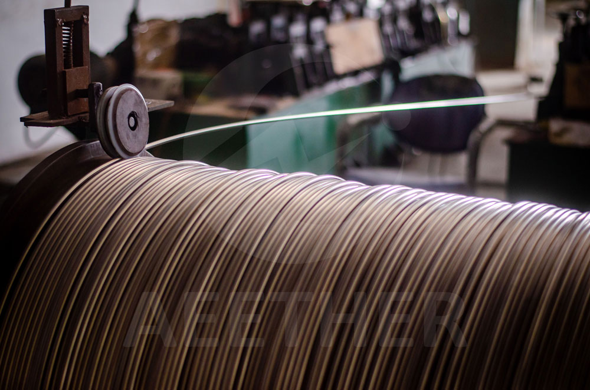
Polishing
Polishing refers to frictioning the surface of a material with a high-speed rotating wheel. Polishing can be done after pickling and bright annealing. Polished surfaces are finer than bright surfaces. Depending on the degree of polish, the surface can have a brushed or mirror finish.
Grinding refers to the processing of the surface of a material with fine particles. A ground surface is similar to a polished surface. Grinding is characterized by very high dimensional accuracy.
Turning is the process of cutting rotating material with a tool. This process has high dimensional accuracy and good roundness. It is often used in the processing of flanges. The processing cost of this process is higher.
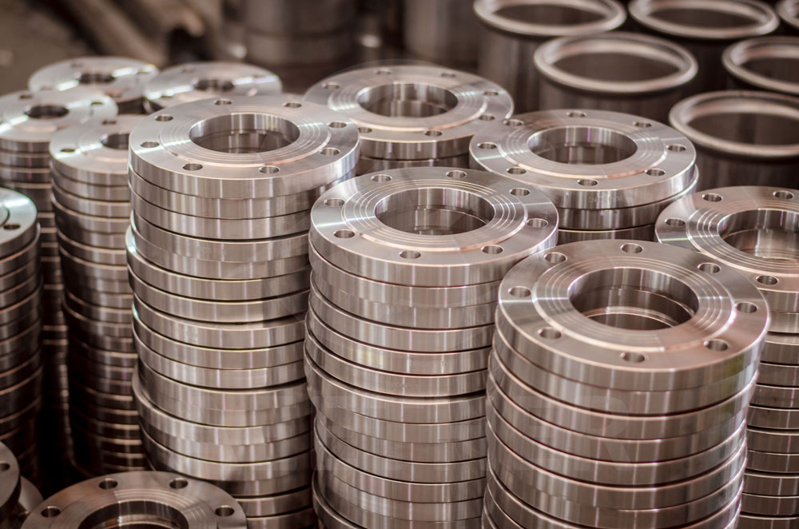
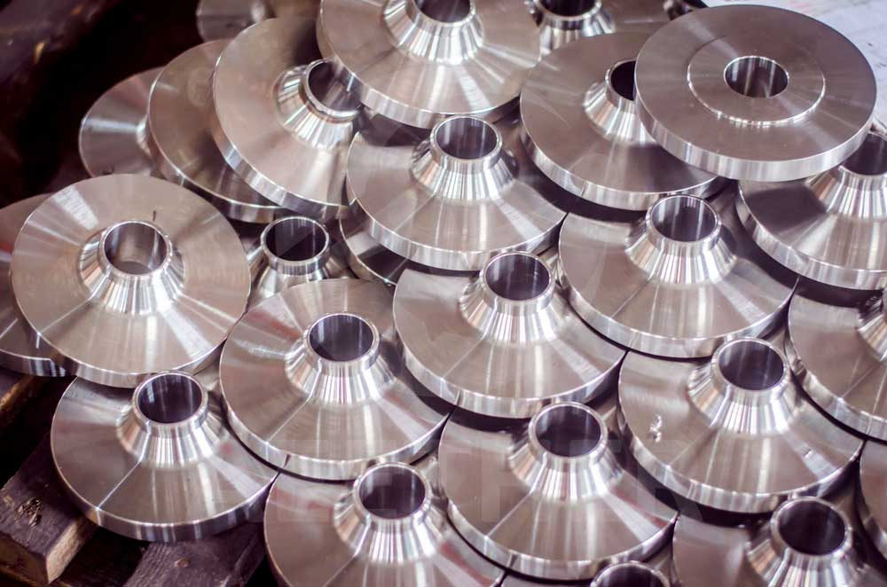
Milling
Milling is the process of machining the surface of a material by the movement of a tool. This process is often suitable for products that are not circular in cross-section.
Sand Blasting
Sand blasting refers to the impact of fine particles on the surface of the material at a high speed. Sand blasted surfaces are similar to pickled surfaces. But it is more fine and beautiful than pickling surface.
Metals are processed into different shapes according to different needs. These are called different product forms. Different product forms have different processing methods.
Seamless Pipe & Tube
Seamless pipe & tube is a tubular product without welds. It is produced by perforating a round bar and undergoing a cold rolling or cold drawing process. Compared with welded pipe & tube, it generally has thicker wall thickness and stronger compression resistance.
Welded Pipe & Tube
Welded pipe & tube is a pipe with a weld. It generally has a thinner wall. Welded pipes & tubes are bent and welded from strips or plates. Its compression resistance is not as good as that of seamless pipes & tubes.
Thick-walled pipes are seamless pipes with thicker walls. Its ability to handle pressure is excellent. Unlike ordinary seamless pipes, thick-walled pipes are produced by hot rolling.
Square Pipe & Tube
Square pipes & tubes are square tubular products. It is produced by cold rolling the welded pipe.
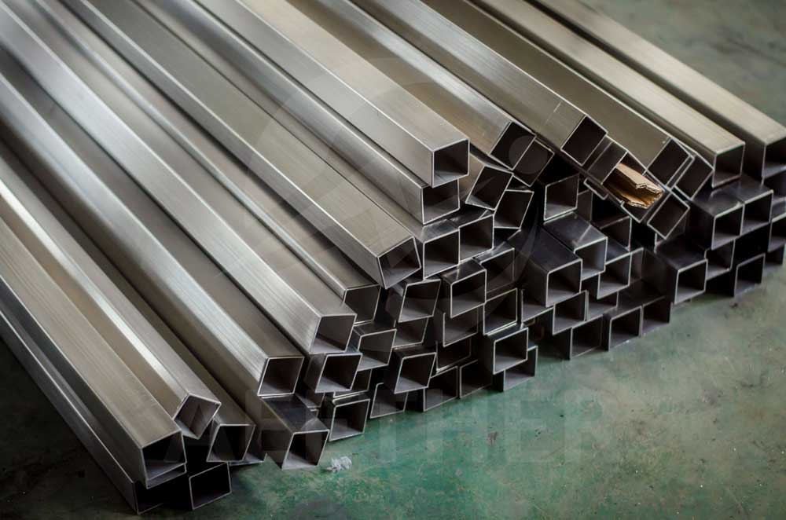
Rectangle Pipe & Tube
Rectangle pipes & tubes are rectangular tubular products. It is produced by cold rolling the welded pipe.
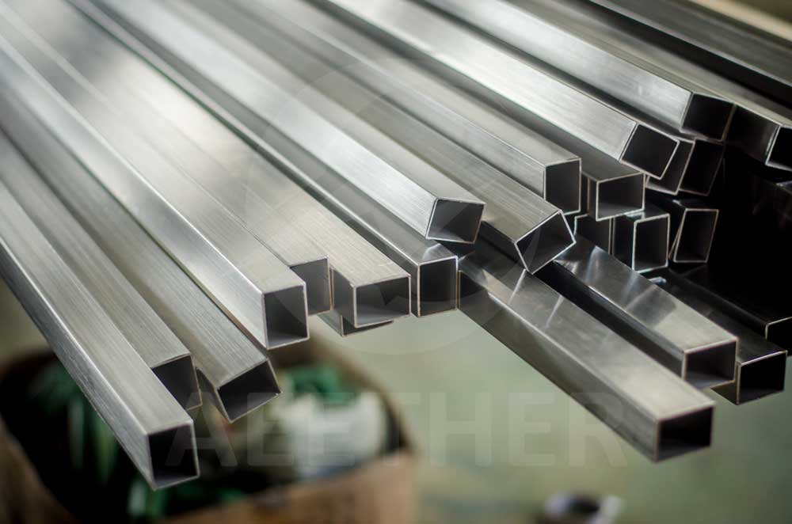
Sanitary Pipe & Tube
Sanitary pipes & tubes generally refer to pipes that have been polished inside and outside. This pipe tube is commonly used in the food and medical industries.
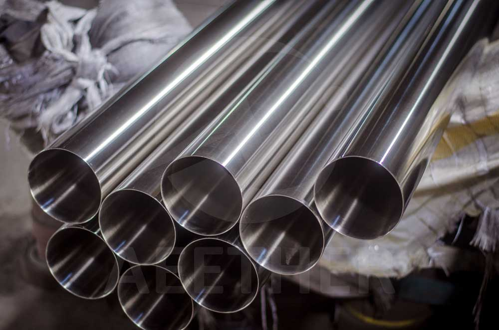
Round Bar & Rod
Round bars & rods are rod-shaped products with a circular cross section. The larger ones are called round bars, and the smaller ones are called rods. Round bars & rods can be produced by hot rolling, forging and cold drawing.
Angle Bar
Angle bar is an L-shaped bar product. Its material is generally stainless steel and carbon steel. It is often used as a building material.
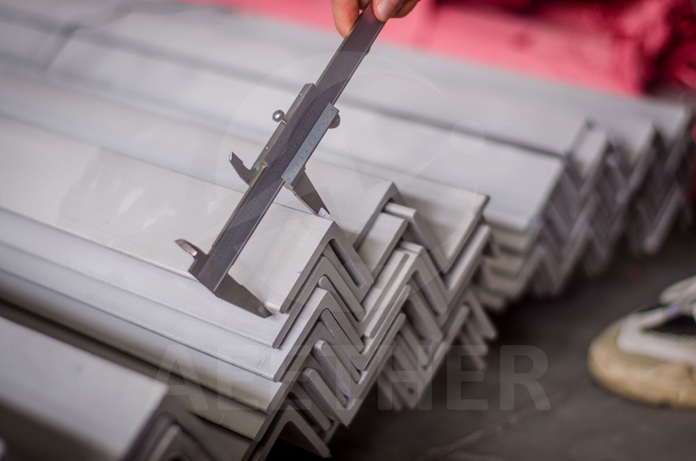
Channel Bar
Channel bar is a U-shaped or H-shaped bar product. Its material is generally stainless steel and carbon steel. It is often used as a building material.
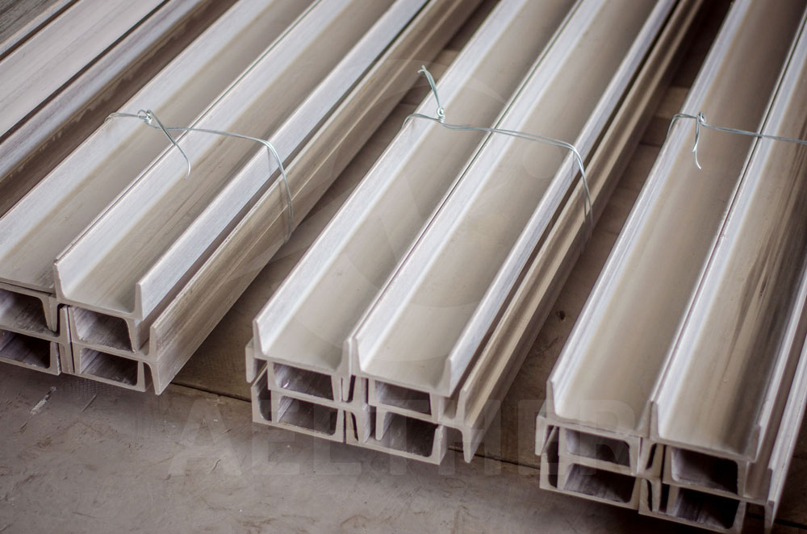
Square Bar
Square bars are bar products with a square cross section. It is produced by cold drawing a round bar.
Hexagon bars are bars with a hexagonal cross-section. It is often used to produce nuts, screws and other products. It is produced by cold drawinground bars.
Fitting
Fittings are a family of products. Its function is mainly used to connect pipelines. According to the difference of shape and function, it has many classifications. Such as: elbows, reducers, tees, pipe caps, etc.
Flange
Flange is a disc-shaped product. Its function is mainly to connect pipes. According to different shapes and functions, there are many classifications of flanges. The most common flanges are: butt welding flange, socket welding flange, blind flange.
Elbow
The elbow is an L-shaped pipe fitting. Its function is to change the direction of the pipeline. According to different angles, elbows are divided into 90° elbows and 45° elbows.
Reducer
Reducer is a kind of pipe fitting. Its function is to connect two pipes of different sizes. The reducer is divided into concentric reducer and eccentric reducer. The cross-sections of the two ends of the concentric reducers are concentric circles. The cross-sections of the two ends of the eccentric reducer are inscribed circles.
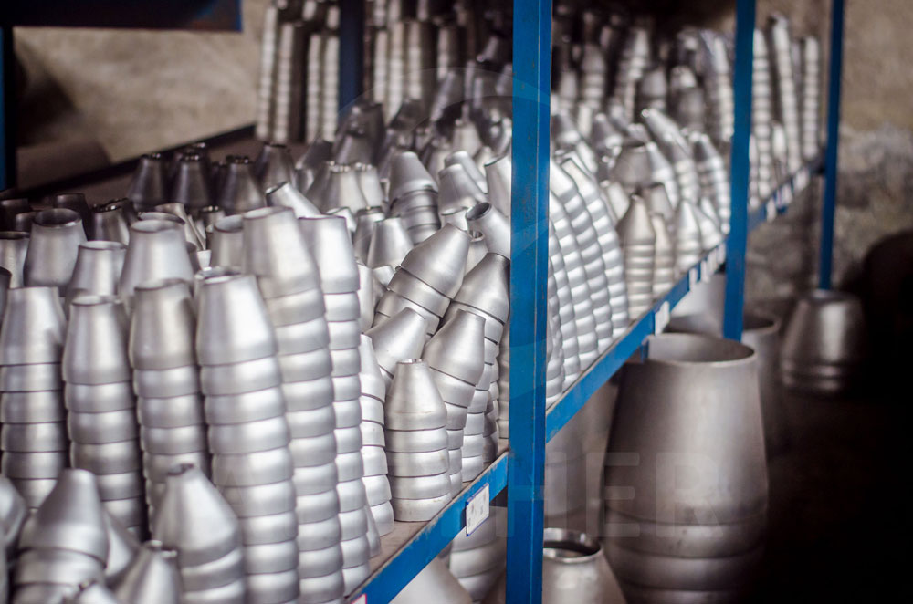
Tee
The tee has three end and is T-shaped. It can connect three pipes in three directions. According to the different calibers, the tees can be divided into equal tee and reducing tee.
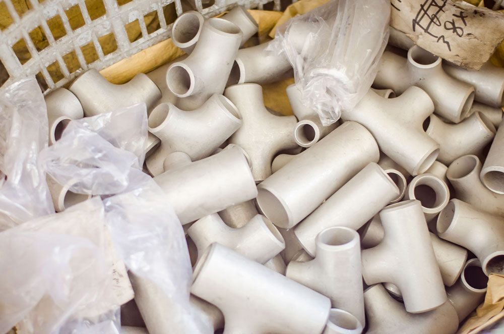
Cross
The cross is a cross-shaped fitting. Its role is to connect four pipes in four vertical directions.
Pipe Cap
The pipe cap is also called the head. It is a bowl-shaped pipe fitting. The function is to seal the pipe end.
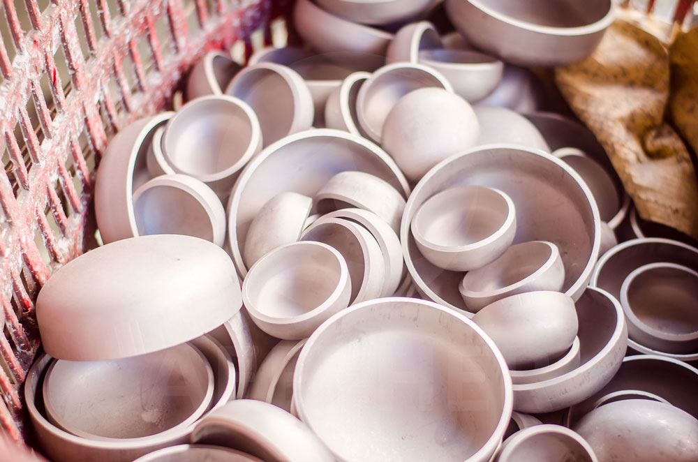
Plate
Plate refers to a thicker flat material. Its thickness is generally above 3mm. Plates are often produced by hot rolling. The surface is generally pickled surface.
Sheet
Sheet refers to a flat material with a thin thickness. Its thickness is generally below 3mm. Sheets are often produced by cold rolling. The surface is generally bright surface.
Block
Block is a cube material. It is usually produced by forging. Block generally requires a milled surface treatment after forging.
Disk
Disk is a disk-shaped material. It can be produced by forging or by cuttingplates.
Ring
Ring is a ring-shaped material. It can be produced by forging or by cuttingplates.
Coil
A coil is a rolled, continuous sheet or plate. The width is often above 500mm.
Strip
Strip is a continuous, flat material in roll form. It can be seen as a coil with a smaller width. Compared with coils, strips can often achieve smaller thickness and higher strength.
Wire
Wire is a continuous, small-diameter material. It is generally wound on a spool. Wire can achieve different strengths during processing.
Spring Wire
Spring wire is a special kind of wire. It is mainly used to make springs. Its strength is much higher than ordinary wire.
Filler Metal (Welding Wire / Welding Rod)
Filler metal is a special kind of wire. It is mainly used as a GTAW welding material. According to different product forms, filler metal can be divided into welding wire and welding rod. The composition of filler metal is slightly different from that of ordinary wire.
Welding Electrode
Welding electrode is a SMAW welding material. It consists of core and coating. The composition of the welding electrode is different from the general material.
Wire Rod
Wire rod is a continuous circular cross-section product. It is made by hot rolling. Its surface is generally pickled or bright. The wire rod is the raw material of wire.
Wire Rope
Wire rope is a rope-like product woven from wires. Due to its stable structure, the wire rope has excellent load-bearing capacity. Silk rope is generally used as a building material.
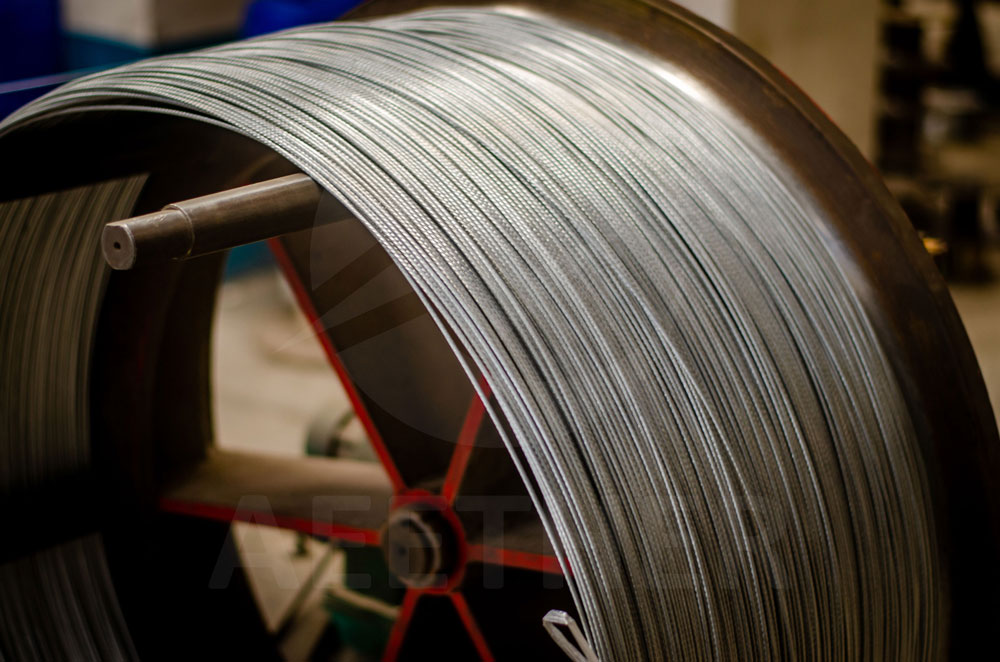
Standard
Standards are documents that need to be referenced when producing materials. It can guarantee the quality of the final product. Standards generally specify the chemical composition, mechanical properties, dimensional tolerances and etc. of materials. Commonly used standards are ASTM, ASME, SAE, etc.
ASTM
The full name of ASTM is American Society for Testing and Materials. It is one of the most widely used standards. Different ASTM standards specify various properties of different materials.
SAE
The full name of SAE is Society of Automotive Engineers. This organization mainly develops a series of standards for the automotive industry, aerospace and marine industries. The requirements of SAE standards are generally higher than those of ASTM.
AWS
The full name of AWS is American Welding Society. The standards of AWS are mainly applicable to various welding materials.
ASME
The full name of ASME is American Society of Mechanical Engineers. The standards of ASME are mainly applicable to the industrial field. Some of ASME's standards are similar to ASTM.
ISO
The full name of ISO is International Organization for Standardization. ISO has a wide range of applications. It stipulates the implementation standards of all walks of life.
GOST
GOST is a Russian standard. It is mainly suitable for some Russian materials.
BS
The full name of BS is British Standards Institution. It is a series of standards developed by the United Kingdom.
Materials often need to go through a series of inspections before delivery to ensure that they meet the requirements. Inspection generally follows a standard.
Hardness testing measures the hardness of a material. According to different measurement methods, hardness has different representation methods.
PMI Testing
The full name of PMI testing is Positive Material Identification. It measures the chemical composition of materials by means of spectral detection. PMI testing instruments are divided into handheld spectrometers and desktop spectrometers. Between them, the detection accuracy of the desktop spectrometer is higher.
Crack
Cracks are tiny imperfections on the surface of a material. It's a very tiny notch. As the material is used, the cracks will grow and become larger and larger, and eventually become the source of fracture. In addition, the material at the crack is more susceptible to corrosion.
Eddy Current Testing
Eddy current testing uses the principle of electromagnetic induction to detect cracks in materials. Eddy current testing is generally applicable to seamless pipes & tubes.
Ultrasonic Testing
Ultrasonic testing uses ultrasonic technology to detect the presence of cracks in materials. Ultrasonic testing is suitable for large-scale materials. Like round bars.
Hydrostatic Testing
Hydrostatic testing involves injecting water into a pipe to create high pressure and checking for leaks. Its purpose is to detect the tightness of the pipeline.
Tolerance
Tolerance refers to the permissable variations of the material. Typically, standards specify a maximum tolerance for the material.
Dimensional Inspection
Dimensional inspection refers to the use of measuring tools to detect whether the size of the material meets the tolerance. Commonly used tools are vernier scales, micrometer screws, and tape measures.
Roundness
Roundness refers to the degree to which the cross-section of cylindrical materials such as round bars and seamless pipes is close to a perfect circle. A common way to evaluate roundness is to calculate the difference between the largest and smallest diameters of the material's cross-section. The smaller the difference, the better the roundness.
Straightness
Straightness is an indicator for evaluating whether a material is close to a straight line in the length direction. The better the straightness, the straighter the material. Straightness is mainly applicable to long-shaped materials such as rods and seamless tubes.
Flatness is mainly applicable to flat materials such as sheets and plates. Flatness is assessed by calculating the difference between the highest and lowest points on the surface of the material. The smaller the difference, the better the flatness.
MTC
The full name of MTC is Material Test Certificate. It is also called mill cert or material test report. It is a guarantee for the performance of the material by the supplier. MTC generally needs to include ordering information, supplier information, chemical composition, mechanical properties, size, weight, heat number and other information required by the standard.